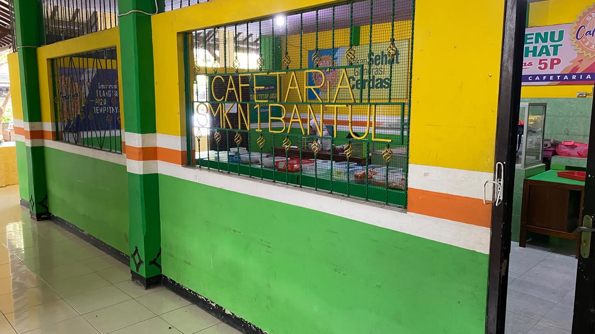
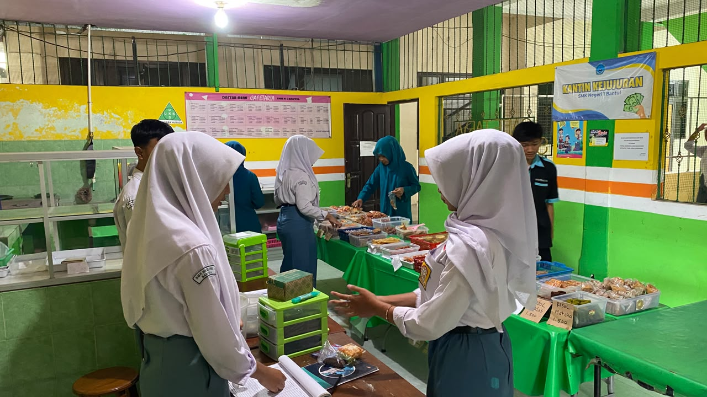
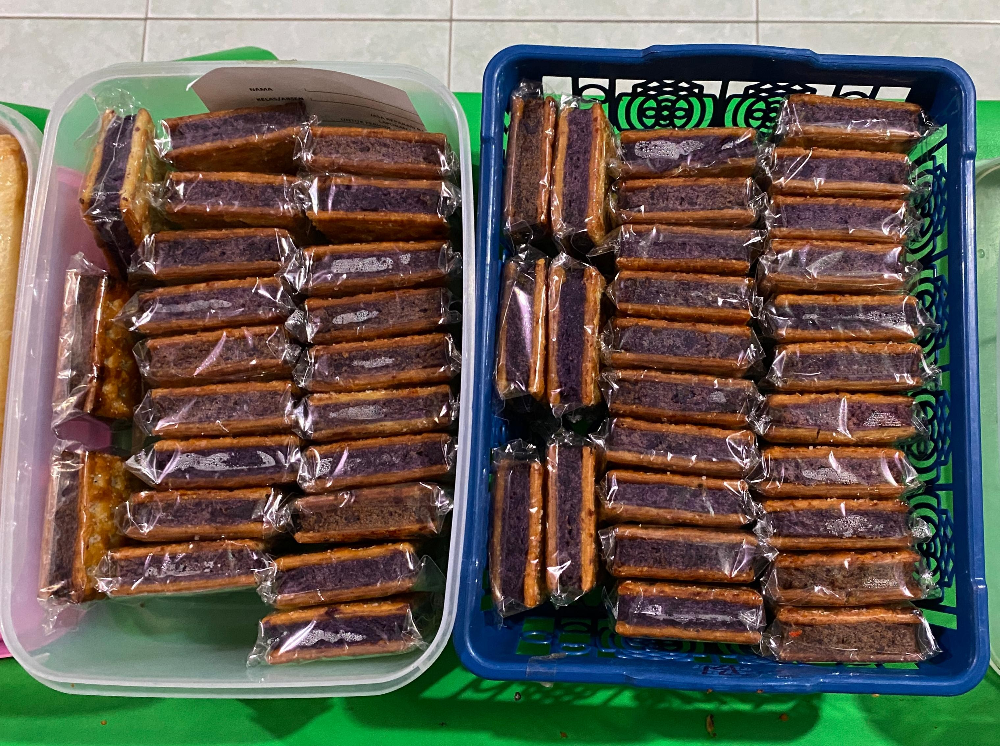
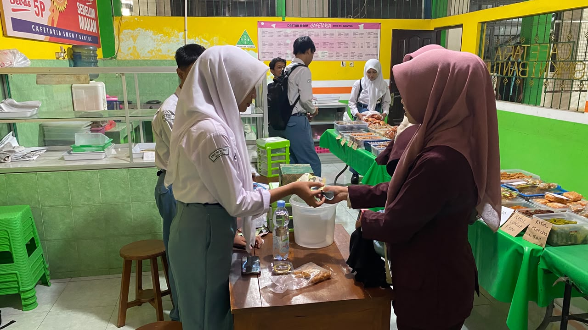
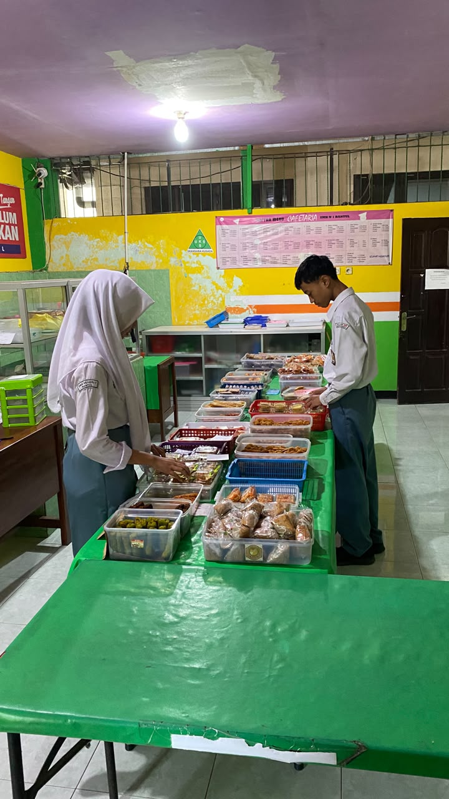

Memeriksa jam buka...
Cafetaria SMKN 1 Bantul menjual makanan dan minuman buatan siswa. Datang saat istirahat, pilih langsung, dan bayar di kasir.
Lihat Menu Kenali Cafetaria Hubungi via WhatsApp
Perjalanan lebih dari satu dekade belajar berwirausaha di lingkungan sekolah.
Cafetaria berdiri pada tahun 2007 sebagai kantin siswa SMK Negeri 1 Bantul. Di masa awal, kantin dikelola oleh siswa program Pemasaran, Akuntansi dan Administrasi Perkantoran, yang belajar menjalankan usaha langsung di sekolah mereka sendiri.
Pada tahun 2018, kantin berubah menjadi Cafetaria sekaligus berganti pengelola. Sejak saat itu, seluruh siswa Bismen terlibat dalam mengelola Cafetaria sebagai tempat praktik usaha yang nyata.
Tujuannya jelas: mendorong tumbuhnya jiwa wirausaha pada siswa. Karena itu, produk yang dijual di sini adalah buatan siswa, dijual kepada sesama siswa. Setiap pembelian ikut mendukung teman sekolah yang sedang belajar berbisnis.
Berdiri sebagai kantin siswa, dikelola siswa Pemasaran, Akuntansi dan Administrasi Perkantoran.
Berubah menjadi Cafetaria dengan pengelola baru, yaitu seluruh siswa Bismen.
Menjual karya siswa untuk siswa sambil melatih jiwa wirausaha.
Potret suasana dan karya siswa di Cafetaria.

Depan Cafetaria

Suasana saat istirahat

Menu andalan

Siswa Bismen melayani

Proses menyiapkan dagangan
Kegiatan bersama tim
Cafetaria dikelola oleh siswa Bismen dengan pembagian tugas yang jelas.
Berlaku untuk supplier yang menitipkan dagangan di Cafetaria.
Isi buku penitipan yang telah disediakan di cafetaria.
Setiap menitipkan barang, kartu identitas diambil oleh supplier.
Saat mengambil hasil penjualan, tunjukkan dan serahkan kartu identitas kepada penjaga cafetaria.
Pengambilan hasil penjualan paling lambat pukul 15.45.
Batas pengambilan hasil penjualan: pukul 15.45
Datang langsung ke Cafetaria saat jam istirahat.
Senin - Jumat
07.00 - 15.30
Sabtu dan Minggu tutup
Cafetaria, SMK Negeri 1 Bantul
Di dalam lingkungan sekolah
Pilih menu langsung di cafetaria, lalu bayar di kasir.